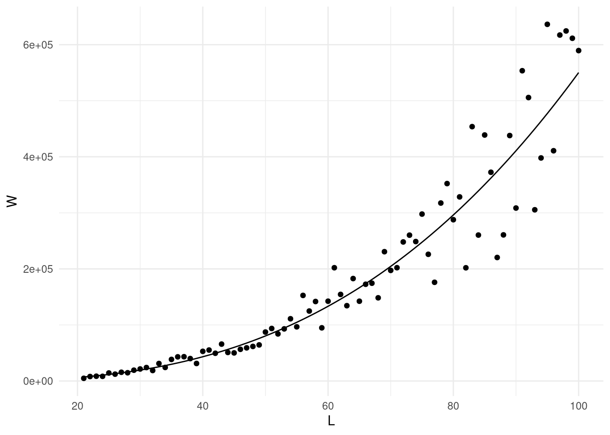
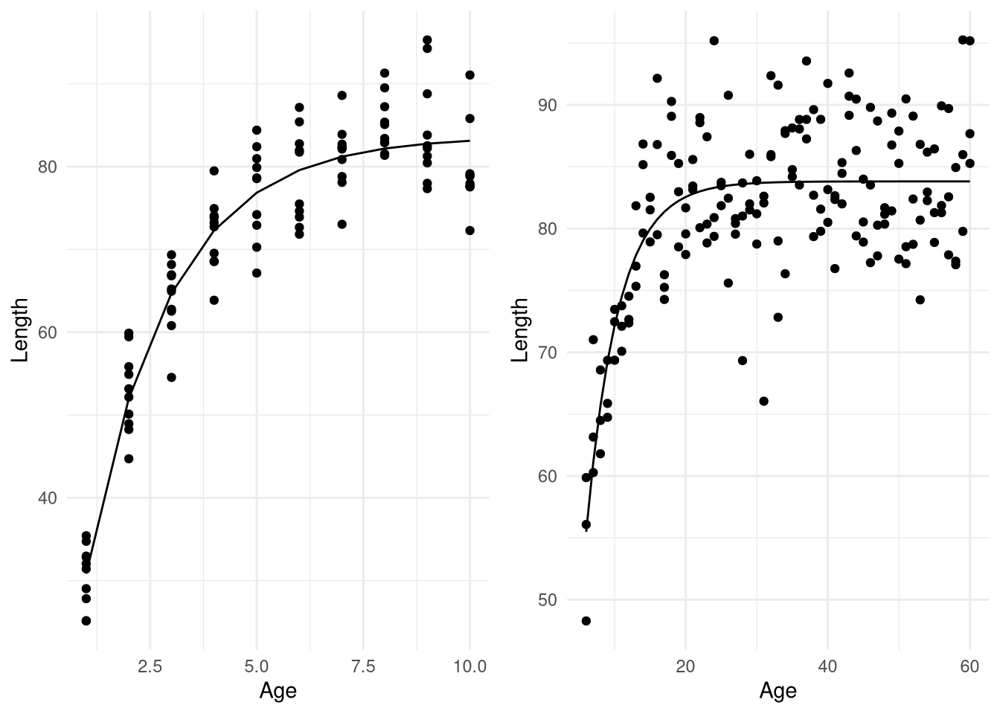
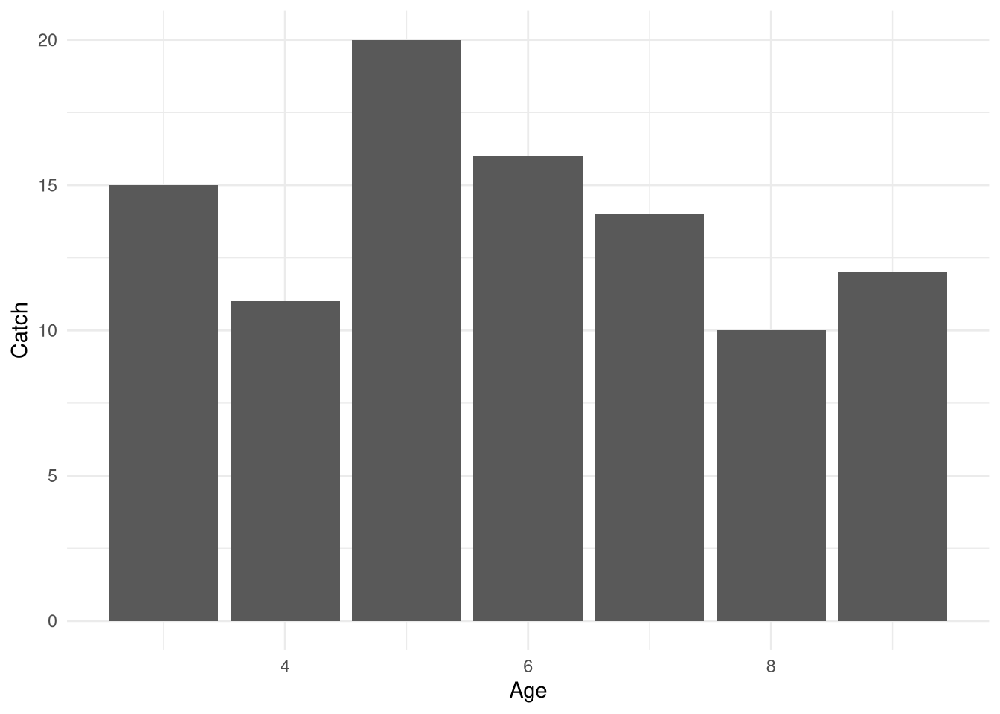

When dealing with age-based models, there are a lot of smaller pieces of information that need support for chosen parameter values or input data. Sometimes this requires some supporting statistical analyses to provide basic biological properties (e.g., growth and maturity), and sometimes this requires some data pre-processing and basic assumptions.
Data used to fit an age-based model
Just like in surplus production models, there are two basic observation data series that are needed to fit the model based by comparing these data to model predictions. Just like in surplus production models, these are 1) catches over time and 2) population abundance indices over time. Just like in surplus production models, contrast in the data are needed to parameterize the model well and provide an informative stock assessment model. However, unlike in surplus production models, the sources of data are age-structured, so that catches at age and population abundance indices at age are needed. This structure provides both a challenge and an opportunity. The opportunity is that with so many time series, it is more likely that contrast will be available with which parameters can be fitted. The challenge is that this contrast must be informative, and based on age data, which must be both available for a wide enough variety of ages and of high enough quality to track the data.
Because age data are relatively expensive to collect and process, we only usually have subsets of age data, but much more length data available as samples, both from commercial catches and surveys. As a result, a method is needed to extrapolate numbers-at-age, both in catches and abundance indices, from length distributions and a sample of age readings. The tool used for extrapolation is called an age-length key.
Creating age length keys
An age-length key is a simple matrix that lists probabilities of a fish observed to be a certain length actually belonging to a certain age group. For example, let’s consider a population with only 3 ages and 5 length groups. Which ALK do you think is more informative?
In addition to time series of length distributions, ALKs are needed both from survey data and commercial data to create time series of estimates of numbers-at-age used for model fitting. Creating ALKs from data are straightforward given enough paired and length distributions. Care in sampling must be given to ensure that rare ages are sampled frequently enough to get accurate estimates of proportions.
If length-at-age is expected to differ based on different components of the population or sampling types (e.g., between gears, or between spatial areas sampled), then ALKs created from these subcomponents should be applied to length data collected within these sub-components. This substantially increases the sampling needed to cover create reliable indices but avoids bias.
Weight-at-length relationships
Frequently, sampling and extrapolation is based on catch or survey weight measurements. In these cases, we also need to use weight-length relationships to translate a total catch into numbers at length, given the expected weight-at-length relationship. In many species, this is quite a stable relationship, so is fitted to data once and then the predictions used when needed. However, due to changes in condition over time or spatially, this assumption should be checked periodically. Here is a basic example for fitting a length-weight relationship:
# Let's first generate some length-weight relationships. If they are unknown, they are often approximated by a simple cubic dimension (line to volume, which is similar to line to weight):#Weight = a*Lenghth^b, where a=1 and b=3#Taking the log of both sides, this is:#log(Weight) = a + b*log(Length)set.seed(100)a <-runif(1); b <-3*rlnorm(1, sdlog =0.1)L <-21:100W <-exp(a + b*log(L)) +rnorm(80,sd =exp(a + b*log(L))/5)LxW.lm<-lm(log(W)~log(L), data =tibble(L,W))tibble(L,W,Pred =exp(LxW.lm$fitted.values)) %>%ggplot(aes(L,W)) +geom_point() +geom_line(aes(L,Pred))

summary(LxW.lm)
Call:
lm(formula = log(W) ~ log(L), data = tibble(L, W))
Residuals:
Min 1Q Median 3Q Max
-0.52854 -0.13096 0.04904 0.14925 0.36999
Coefficients:
Estimate Std. Error t value Pr(>|t|)
(Intercept) 0.44034 0.21300 2.067 0.042 *
log(L) 2.77464 0.05271 52.635 <2e-16 ***
---
Signif. codes: 0 '***' 0.001 '**' 0.01 '*' 0.05 '.' 0.1 ' ' 1
Residual standard error: 0.2036 on 78 degrees of freedom
Multiple R-squared: 0.9726, Adjusted R-squared: 0.9723
F-statistic: 2770 on 1 and 78 DF, p-value: < 2.2e-16
Length-at-age relationships
Even though growth is obviously a very important biological relationship, and body growth is an important process, it is not incorporated directly into age-based modeling, and therefore never estimated. Growth processes are implicitly included in the creation of the ALK. Therefore, by plotting and fitting for example, a Von Bertalanffy growth curve, we can gain a better understanding of our data and biological processes, even if it is not directly incorporated into the modeling framework. For example, let’s consider two growth curves that look very different. They are intended to reflect growth similar to haddock versus golden redfish.
# To fit length at age data to a Von Bertalanffy curve, we can use the nls function as we did to fit the surplus production function# Let's first define a VonBertalanffy curve:VonBertalanffy<-function(Linf =100, K =0.5, t0 =0, Age){ pred <- Linf*(1-exp(-K*(Age - t0)))return(pred) }#We can then generate some data to fit# This first example resembles haddockAge <-rep(1:10, each =10)L <-VonBertalanffy(Age = Age, K =0.5, Linf =83, t0=0.1) +rnorm(length(Age), sd =5)LxA.nls<-nls(Length~VonBertalanffy(Linf, K, t0, Age), data =tibble(Age, Length = L), start =c(Linf =80, K =0.2, t0 =0))summary(LxA.nls)
Formula: Length ~ VonBertalanffy(Linf, K, t0, Age)
Parameters:
Estimate Std. Error t value Pr(>|t|)
Linf 83.63703 0.96390 86.770 <2e-16 ***
K 0.51297 0.03866 13.269 <2e-16 ***
t0 0.10328 0.09819 1.052 0.295
---
Signif. codes: 0 '***' 0.001 '**' 0.01 '*' 0.05 '.' 0.1 ' ' 1
Residual standard error: 4.911 on 97 degrees of freedom
Number of iterations to convergence: 5
Achieved convergence tolerance: 1.964e-07
p_VB_haddock<-tibble(Age, Length = L, Pred =VonBertalanffy(Linf =coef(LxA.nls)[1], K =coef(LxA.nls)[2], t0=coef(LxA.nls)[3], Age)) %>%ggplot(aes(Age, Length)) +geom_point() +geom_line(aes(Age, Pred))# This second example resembles Golden redfishAge <-rep(6:60, each =3)L <-VonBertalanffy(Age = Age, K =0.2, Linf =83, t0=0.1) +rnorm(length(Age), sd =5)LxA.nls<-nls(Length~VonBertalanffy(Linf, K, t0, Age), data =tibble(Age, Length = L), start =c(Linf =80, K =0.2, t0 =0))summary(LxA.nls)
Formula: Length ~ VonBertalanffy(Linf, K, t0, Age)
Parameters:
Estimate Std. Error t value Pr(>|t|)
Linf 83.81629 0.47761 175.491 < 2e-16 ***
K 0.22241 0.03072 7.240 1.71e-11 ***
t0 1.12312 0.91907 1.222 0.223
---
Signif. codes: 0 '***' 0.001 '**' 0.01 '*' 0.05 '.' 0.1 ' ' 1
Residual standard error: 5.028 on 162 degrees of freedom
Number of iterations to convergence: 4
Achieved convergence tolerance: 2.789e-06
p_VB_redfish<-tibble(Age, Length = L, Pred =VonBertalanffy(Linf =coef(LxA.nls)[1], K =coef(LxA.nls)[2], t0=coef(LxA.nls)[3], Age)) %>%ggplot(aes(Age, Length)) +geom_point() +geom_line(aes(Age, Pred))gridExtra::grid.arrange(p_VB_haddock, p_VB_redfish, ncol =2)

Let’s look at the assessment reports for haddock and golden redfish, found on the hafogvatn.is advice webpage. Age-based models are fit to both. In particular, pay close attention to the age and length distributions and any model diagnostics in the reports. For each one, can you see cohorts transitioning through the population?
Catch curve analysis - method for estimating mortality
#Below is age frequency data on whelk caught in 1993 during a survey at Hrappsey. Fishing began in 1996, so this population is thought to be pristine. #Q1 What is a) number of recruits at birth (age 0); b) mortality rate Z; c) the proportion of the population that dies each year, and d) the number of recruits at age 3?HrappseyCatch<-c(15, 11, 20, 16, 14, 10, 12);HrappseyAge<-3:9tibble(Catch = HrappseyCatch, Age = HrappseyAge) %>%ggplot(aes(Age,Catch)) +geom_col()

par(mfrow =c(1,2))# the first two years are not fully selected, so are removedHrapp.lm<-lm(log(HrappseyCatch[-c(1,2)])~HrappseyAge[-c(1,2)])#a,bN0_Hxv <-exp(coef(Hrapp.lm)[1]); ZZ_H <--coef(Hrapp.lm)[2]#c1-exp(-ZZ_H)
HrappseyAge[-c(1, 2)]
0.1385735
#Q2. Recently, another survey was done. Calculate fishing mortality based on the new data. What proportion of the population decreases due to fishing each year?BrjanCatch<-c(76, 85, 213, 161, 85, 46, 48, 17 )BrjanAge<-3:10tibble(Catch = BrjanCatch, Age = BrjanAge) %>%ggplot(aes(Age,Catch)) +geom_col()
This version of a catch curve analysis is very simple. If mortality rates are in reality applied to cohorts, what is the major flaw with the way that this catch curve is applied? What does it assume about recruitment amounts entering the population?
Maturation and spawning stock biomass
Finally, if a stock-recruitment relationship is needed, then we need to estimate maturity-at-age ogives to create spawning stock biomass estimates. Even if stock-recruitment relationships are not used, estimates of spawning stock biomass are often used for visually assessing the stocks, or for creating reference points.
Mat.glm<-glm(Maturity~Age, family =binomial(logit), data = maturity_data)summary(Mat.glm)
Call:
glm(formula = Maturity ~ Age, family = binomial(logit), data = maturity_data)
Coefficients:
Estimate Std. Error z value Pr(>|z|)
(Intercept) -15.9025 2.7826 -5.715 1.10e-08 ***
Age 1.1399 0.1971 5.782 7.38e-09 ***
---
Signif. codes: 0 '***' 0.001 '**' 0.01 '*' 0.05 '.' 0.1 ' ' 1
(Dispersion parameter for binomial family taken to be 1)
Null deviance: 297.003 on 247 degrees of freedom
Residual deviance: 56.909 on 246 degrees of freedom
AIC: 60.909
Number of Fisher Scoring iterations: 8
#Q3.1 What is L50? (look at the web page for the equation)A50<--(coef(Mat.glm)[1])/coef(Mat.glm)[2]p1 <- maturity_data %>%mutate(fits =fitted(Mat.glm)) %>%ggplot(aes(Age, Maturity)) +geom_point() +geom_line(aes(Age, fits)) +geom_vline(xintercept = A50, color ='red')p2 <- maturity_data %>%group_by(Age) %>%summarise(Maturity =sum(Maturity)/n()) %>%left_join(maturity_data %>%mutate(fits=fitted(Mat.glm)) %>%select(Age, fits) %>%distinct() %>%arrange(Age)) %>%ggplot(aes(Age, Maturity)) +geom_point() +geom_line(aes(Age, fits)) +geom_vline(xintercept = A50, color ='red')
Joining with `by = join_by(Age)`
#Above we used fitted values from the model object to represent model predictions. However, this only works if all ages are present in the dataset. If some are missing, it might be better to use true predictions:Int<-as.numeric(coef(Mat.glm)[1])Slope<-as.numeric(coef(Mat.glm)[2])LogitPred<-Int+Slope*c(0:20)PredMat<-boot::inv.logit(LogitPred)# At what age does 50% maturity occur?LxA.nls<-nls(Length~VonBertalanffy(Linf, K, t0, Age), data = maturity_data, start =c(Linf =80, K =0.2, t0 =0))summary(LxA.nls)
Formula: Length ~ VonBertalanffy(Linf, K, t0, Age)
Parameters:
Estimate Std. Error t value Pr(>|t|)
Linf 340.233434 22.253726 15.289 < 2e-16 ***
K 0.045208 0.005983 7.556 8.28e-13 ***
t0 -5.489552 0.546709 -10.041 < 2e-16 ***
---
Signif. codes: 0 '***' 0.001 '**' 0.01 '*' 0.05 '.' 0.1 ' ' 1
Residual standard error: 13.82 on 245 degrees of freedom
Number of iterations to convergence: 8
Achieved convergence tolerance: 4.437e-06
Now let’s use the model from yesterday to create a simulation of the above population to plot a stock-recruitment relationship. To implement dependence of the recruitment on the spawning stock biomass, we will use the Ricker function. Follow the steps described below. Look at the plot and compare it to plots used in guidelines for Category 1 stock assessements found here.
# 1- define model dimensions # ages and # years# 2 - define the model function (copy-paste from yesterday)# 3 - modify the function to include a recruitment prediction from a stock-recruit relationship. Hint: copy and paste the stock-recruit relationship function and use the predictions from that function to determint a later year's recruitment value. Try adding some error to the predicted recruitment result.# 4 - define a vector of effort values reflecting fishing history. We are NOT analyzing equilibrium values, we just want contrast in fishing history (effort levels) so we can observe population growth (recruitment) at various population states (low and high).# 5 - run the model and plot recruitment as a function of SSB. Compare to ICES plots in the guidelines.
Age-based assessments are data-intensive and often take several months to develop. Many software packages are available but should be used with caution. We don’t have time in this course to go through a full example of fitting an age-based assessment, but it is based on the same principles as fitting a surplus production model. The largest difference is that because there are several more parameters and possibly multiple sources of data, the objective function used to fit the model, most often a likelihood, can get rather complex. For a good R-based vignette on fitting an age-based statistical catch-at-age model, refer to the FLR set of packages found here.